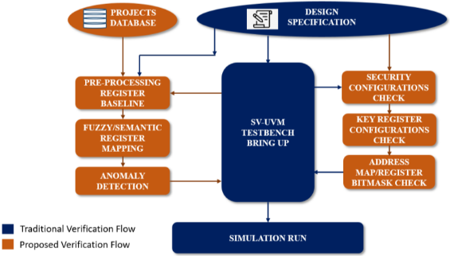
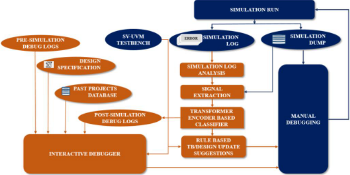
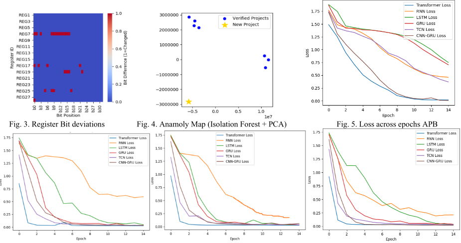
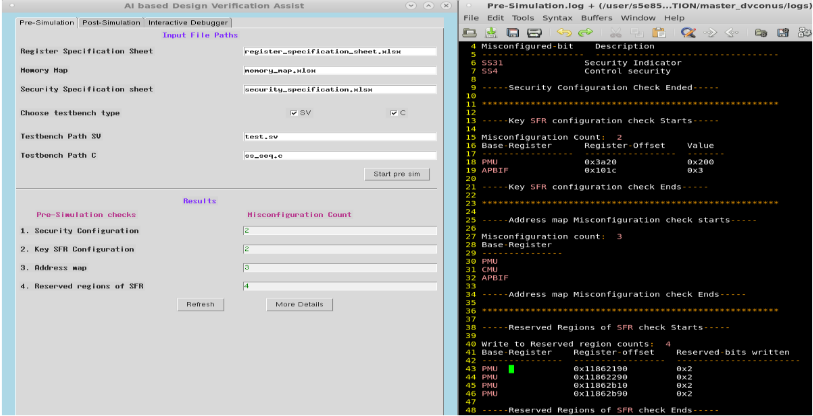
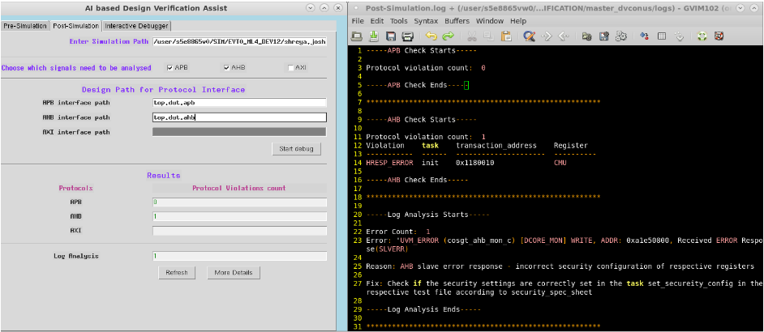
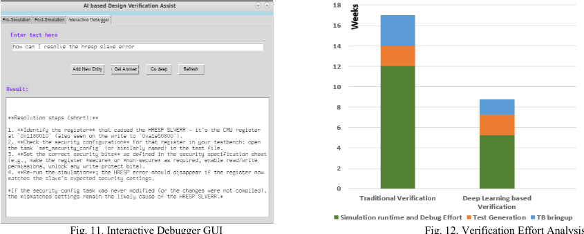

AI 驱动的 SoC 设计验证先进调试技术
论文针对复杂 SoC 验证中 testbench bring-up 与调试高度依赖人工 log 检查、波形分析和反复仿真、且无法复用跨项目数据的问题，提出一套混合式 AI 驱动的 DV 辅助框架。框架分两阶段：pre-simulation 阶段从历史已验证项目构建寄存器初始化基线，结合规则检查、fuzzy/语义寄存器映射与 Isolation Forest 异常检测，在仿真前发现 TB 寄存器配置缺失、不一致及 reserved bits 越权写入；post-simulation 阶段用 SV assertion/UVM 消息引导 Python 脚本从 wave dump 选择性提取 AHB/APB/AXI 总线信号，训练 RNN/LSTM/GRU/TCN/CNN-GRU/Transformer 等模型做协议错误多分类，并用 BERT embedding 加 FAISS 相似检索和 OpenAI LLM 构建可交互调试知识库。结果显示整体验证工作量平均降低 56%，单个 feature 的 DV 从 15 周缩短至 5-6 周，其中 Transformer Encoder 分类性能最佳。
复杂 SoC 中需分析的信号数量庞大、仿真时间长，传统调试流程高度依赖人工 log 检查、密集波形分析与反复仿真运行，耗时且未能利用跨项目积累的可复用数据，TB bring-up 与调试成为芯片生命周期瓶颈。论文旨在用 AI 辅助验证工程师完成 pre-simulation 阶段的 TB bring-up 与 post-simulation 阶段的仿真 log 和 wave dump 分析，提升 DV 效率与准确性。
提出多阶段混合框架，融合深度学习模型、SV assertion/checker、规则化分析与 LLM 推理：(1) Pre-simulation TB bring-up 辅助：从已验证项目集合构建寄存器基线统计模型（presence ratio、Mode Value、Value Set，JSON 格式），经确定性规则检查、fuzzy/语义寄存器跨项目映射、Isolation Forest 异常检测，以及 SFR reserved bits 位掩码与安全配置校验，在仿真前发现缺失/不一致/错误的寄存器设置；(2) Post-simulation 分析：checkers 以 UVM_INFO/UVM_ERROR/UVM_FATAL 消息标记失配，Python 脚本据此从 wave dump 选择性提取 AHB/APB/AXI 总线信号为 CSV，输入 RNN/LSTM/GRU/TCN/CNN-GRU/Transformer Encoder 等模型做 transaction 错误多分类（dense+ReLU+softmax，categorical cross-entropy，Adam，batch size 32，dropout 20%），再由规则化脚本做根因分析，判断失败源于 TB 更新还是 design 更新并映射到 TB 代码行；(3) LLM 交互调试：regex 提取 UVM 消息，BERT encoder 生成语义 embedding，FAISS 索引历史错误-修复知识库做余弦相似检索并持续扩充，OpenAI LLM 提供上下文问答；工具链含 Pandas、Scikit-learn、PyTorch、FAISS、Tkinter GUI。
在部署该方法的多个项目上，整体验证工作量平均降低 56%
框架一次性搭建投入 12 周，扩展到新项目需 2 周
单个 feature 的 DV：传统方法 15 周，采用该方法后 5-6 周
深度学习模型对比中 Transformer Encoder 综合性能最高，LSTM/GRU 次之，RNN 准确率较低，TCN 收敛更快更稳定，CNN-GRU 兼顾空间与时序特征（accuracy/precision/F1 具体数值在 Table I，正文未列出）
相比已有工作（仿真 log 聚类/分类、ML 激励生成、覆盖率提升、K-means trace 分段、APB transaction 类型识别等仅辅助且需人工介入的方法），该框架覆盖 pre- 与 post-simulation 全流程并给出完整调试结论：将 log 分析延伸到 wave dump 选择性信号提取与协议错误分类；混合确定性规则与概率性 AI 组件；用 BERT+FAISS 构建跨项目持续演化的调试知识库，并以 LLM 交互式问答和 GUI 提升易用性。
相关度级别：high
命中能力域：2.4 设计验证方法学 | 2.7 EDA/验证自动化与 AI 辅助
理由：论文直接命中 2.4 设计验证方法学（UVM 报告机制、SV assertion/checker、bug triage 与 debug 方法学）与 2.7 EDA/验证自动化与 AI 辅助（LLM 辅助 log 分析与调试、验证流程自动化、可复用调试知识库）。团队在 LPDDR/HBM/UCIe 等 IP 的 DV 交付中同样面临 TB bring-up 与 log/波形调试耗时、跨项目经验难复用的问题；论文以 AMBA 总线协议错误分类为对象，与团队互连/协议类 IP 的检查场景同构，其基线校验与知识库沉淀思路可直接迁移。
建议动作：深入精读并做内部分享
Shreya Jayateerth Joshi, Poonam M Shettar, Sanjoy Saha, Alok Kumar, S Shrinidhi Rao, Garima Srivastava
三星半导体印度研发中心，印度班加罗尔
摘要——片上系统（SoC）的最新进展促使多个面向特定应用的处理器被集成在一起，以满足日益增长的处理需求。如此复杂的设计使得设计验证（DV）阶段极具挑战性。由于传统调试机制已难以跟上这一步伐，我们提出基于人工智能（AI）的验证技术，以协助验证工程师进行测试平台（TB）的搭建与调试。所提出的方法通过在 TB 中将深度学习模型和 Python 脚本与 SystemVerilog（SV）断言以及通用验证方法学（UVM）报告机制结合使用，有望提升验证效率。我们利用深度学习算法的能力，在仿真后阶段识别所需的 TB 或设计更新，并在仿真前阶段支持测试平台的搭建。我们还采用大语言模型（LLM）提供基于查询的交互式 DV 辅助，从而使我们的工作更加用户友好。采用该方法后，我们观察到整体验证工作量平均减少了 56%。
芯片对高处理能力的需求持续挑战着半导体行业。正如摩尔定律（Moore's Law）所预测的那样，晶体管的微型化使得高度复杂设计的生产成为可能。然而，制造成本已显著上升，给设计验证（DV）带来了巨大压力。在复杂的片上系统（SoC）中，由于需要分析的信号数量庞大且仿真时间更长，验证工作量大幅增加。因此，测试平台（TB）搭建和调试过程成为芯片生命周期中的瓶颈。传统调试流程高度依赖人工日志检查、高强度的波形分析以及反复的仿真运行。这类方法不仅耗时，而且未能充分利用在多个验证项目中产生的大量可复用数据。所提出的方法提供了一种混合式的人工智能（AI）驱动的 DV 辅助方案，该方案利用深度学习模型、SystemVerilog（SV）断言/检查器、基于规则的分析以及基于大语言模型（LLM）的推理，以提升 SoC DV 的效率和准确性。我们提出了一个多阶段框架，用于在 TB 搭建（仿真前阶段）以及仿真日志和波形转储分析（仿真后阶段）中为验证工程师提供辅助。我们方法的关键特性如下：
Andy Truong 等人 [1] 针对约束随机验证（Constrained Random Verification, CRV）测试平台（TB）中的仿真日志文件，对聚类与分类算法进行了比较研究。[2]-[4] 的工作介绍了在激励生成中采用机器学习（ML）模型以增强设计验证（DV）的做法。ML 模型还有助于改善 CRV TB 中的覆盖率指标 [5]-[8]。E. El Mandouh 等人 [9] 利用 K-means 聚类来识别跟踪转储（trace dump）中的跟踪片段，这些片段要么是独特的（可用于更深入的调试），要么是冗余的。此类方法仅起辅助作用，仍需验证工程师介入，因为它们可能发现设计缺陷，也可能发现不了。Abhiram S. 等人 [10] 对 ML 模型在 APB 协议验证中的应用进行了比较研究。在该工作中，ML 模型仅被训练用于识别事务类型（读/写）并突出显示错误响应。
在难以对数据或事件进行随机化的设计验证场景中，生成随机化测试用例并运行仿真可能需要大量计算。对于高度复杂的设计，随机化方法可能导致更长的仿真时间。我们始终需要定向测试（directed test）来确保验证的彻底性。因此，TB 中通常同时包含定向测试和随机化。我们的方法适用于混合式、多层面的 TB，其中 TB 可以基于 SV、SV+C 等构建，测试既可以是定向的，也可以是随机化的。此外，仅靠仿真日志分析可能导致调试结论不明确，因为仿真日志只能提供对设计和测试环境的部分洞察。因此，我们在从仿真日志分析中获取相关信息之后，加入了仿真波形转储分析，以给出完整的调试结论。我们框架的流程与人工验证的思路一致，其目标是以用户友好的方式在验证的每个阶段为验证工程师提供辅助，从而加快 DV 进程。
如图 1 所示，该框架在初始 TB 搭建之后执行，此时 TB 尚处于初期阶段。因此，在仿真之前尽早检测出 TB 问题可以减少仿真迭代的次数。该框架由机器学习（ML）模型和 Python 例程组成，用于验证在研项目的 TB 寄存器初始化序列。TB 数据由 Python 例程获取并重新格式化（CSV 格式），供仿真前和仿真后两个阶段使用。通过利用基于规则的确定性检查、模糊匹配、语义相似度分析以及 ML 模型，该框架能够在仿真之前识别出缺失、不一致或错误的寄存器设置。该框架包含以下几个阶段：
作为预处理的一部分，从一组先前已验证的项目 {P1,P2..Pn} 构建统计基线模型 B，其中每个项目数据集表示为 Pi={(rj,vj)}。这里，rj 为寄存器键，vj 为对应的初始化值。对于每个寄存器键，基线（JSON 格式）维护 B(r)={pr,vr,mode,Vr,set}，其中 pr 为出现率（presence ratio），表示其在各项目中出现的频率；vr,mode 为众数值（Mode Value），表示使用频率最高的初始化值；Vr,set 为值集合（Value Set），表示所有观测值的集合。
预处理完成后，执行基于规则的确定性检查，将基线 JSON 文件与 TB CSV 文件之间缺失/多余的寄存器配置以及寄存器值偏差捕获到输出 CSV 文件中。

由于排版差异或 IP 版本修订，各项目的寄存器命名规范各不相同。为确保可靠的跨项目映射，需对上一步骤输出的 CSV 文件执行以下机制：
为了识别此前未见过的 TB 配置不一致问题，采用了一种基于孤立森林（Isolation Forest，IF）的异常检测 [12] 机器学习（ML）模型。每个项目配置被向量化为固定长度的特征向量 Xᵢ = [vᵢ₁, vᵢ₂ ,.. vᵢₙ]，其中每一维对应一个基线寄存器。该 ML 模型在基线数据集上进行训练，以对寄存器模式的正常分布进行建模。
该框架阶段用于验证对特殊功能寄存器（Special Function Register，SFR）保留位的非法写入。寄存器规格定义了每一位的访问权限。对于每个 32 位 SFR，都会生成一个位掩码，并将其连同对应的寄存器名称或地址与偏移量一起存储在 CSV 文件中。随后，对从 TB 中提取的寄存器值进行比较和检查，以确保保留区域未被写入。对寄存器的安全配置进行验证。任何不匹配都会被标记为总线错误或特权故障的潜在来源。该框架标记的所有警告和错误均会按要求记录在调试日志中，以供日后参考。

可以编写专用的检查器/断言来验证设计信号的行为，并以 UVM 消息（UVM_INFO、UVM_ERROR 和 UVM_FATAL）的形式在仿真日志中标记不匹配项。这些消息与来自测试平台（TB）的其他 UVM 消息一起，指导 Python 脚本对信号提取进行微调。
本文所提出的框架不依赖基础的验证 IP（VIP）监视器或人工波形检查，而是采用深度学习模型来分析片上总线信号（AHB、APB 和 AXI）的仿真波形转储，并深入挖掘事务流中的异常。这种方法加快了对事务停顿、协议违规等问题的根因检测，从而缩短了调试时间。
在本对比研究中，我们考虑了以下机器学习（ML）模型：
所有模型均在固定长度的事务窗口上进行训练，其中每个时间步表示一个时钟周期内的一组 AMBA 协议信号值。各网络的最终隐藏表示被送入一个采用修正线性单元（ReLU）激活的全连接层 [27]，随后接一个 softmax [28] 层，用于对事务错误进行多类别分类。所有实验均采用分类交叉熵损失函数 [20] 和 Adam 优化器 [19]，训练时批大小（batch size）为 32，dropout 率为 20%。各架构间一致的实验设置确保了性能比较的公平性，同时凸显了循环、卷积以及基于注意力的方法在协议错误分类方面的权衡取舍。ML 模型的所有预测结果均按要求记录在调试日志中，以供日后参考。
a) 在仿真后阶段，对仿真日志中的通用验证方法学（UVM）消息进行分析，以便于从仿真波形转储中提取 AXI、AHB 和 APB 总线信号。调试所需的设计信号以 CSV 格式提取，并输入 ML 模型。ML 模型对总线事务的预测结果还可进一步促成从仿真波形转储中提取安全配置信号或其他处理器信号。由此，Python 例程从波形转储中执行选择性数据提取，以最大限度地减少不必要的信息处理，并捕获对当前调试流程至关重要的数据。
b) 利用 ML 模型的预测结果，Python 脚本执行根因分析，以判断仿真失败是由验证平台（TB）更新还是设计更新所致。在出现某些协议违规的情况下，脚本会借助 TB（CSV 文件）将失败的事务映射到 TB 中需要更新的代码行。脚本还会提示失败是否源于事务路径中缺失的安全配置，或设计中缺失的端口定义。基于规则分析得出的所有结论均按要求记录在调试日志中，以供日后参考。
该框架包含一个生成式 AI 层，以提供智能化、上下文感知的调试辅助。尽管基于正则表达式的解析方法 [29] 被用于从仿真日志中系统地提取通用验证方法学（UVM）消息，但传统方法到这一提取阶段便告终止。所提出的系统在此基础上进行了扩展，利用大语言模型（LLM）和基于嵌入的语义检索来解读提取出的日志消息、对其进行分类，并与历史调试数据相关联，以推荐可能的纠正措施。该框架与验证环境无缝集成，可处理原始仿真日志、从反复出现的错误模式中学习，并为验证工程师提供交互式的、类人般的辅助。交互式调试器会根据需要参考来自仿真前和仿真后阶段的调试日志。
a) 日志解析与预处理：来自检查器的 UVM 消息由基于正则表达式的脚本提取并分析，该脚本会扫描 ERROR、FATAL、ASSERT 和 FAIL 等关键字。每条检测到的日志条目都会被打上时间戳，按严重程度分类，并存储在 CSV 文件中。该文件随后被送入后续的基于嵌入的语义比较和 LLM 驱动的推理环节，使系统能够结合历史失败数据来解读日志模式。
b) 基于嵌入的错误相似度：在从仿真日志中提取 UVM 消息后，每条唯一的消息都使用基于 BERT 的预训练编码器转换为语义嵌入向量。历史错误及其根因、修复方法和备注被存储在 JSON 数据库中，并使用 Facebook AI Similarity Search（FAISS）[18] 进行索引，以支持实时相似性搜索。当遇到新错误时，会使用余弦相似度将其嵌入向量与 FAISS 索引进行比较。如果找到超过设定阈值的匹配项，则检索包含修复方法的相应记录；否则，系统会提示用户添加新条目，并自动更新数据库和索引。这一机制提供了一个跨项目持续演进的调试知识库。
c) 交互式问答：基于 OpenAI 的语言模型 [30] 通过参考调试日志提供上下文推理和问答能力。验证工程师可以询问设计信号的取值、测试进度、修复仿真失败的建议，以及对仿真前和仿真后建议的解释。
该框架使用了一系列用于数据处理、模型训练和交互式调试的库。Pandas [17] 在仿真前和仿真后框架中均被使用，用于检索设计规格说明、预处理 TB 等。正则表达式（re）库有助于从仿真日志中高效提取错误和事件消息。Scikit-learn [16] 支持数据集准备、预处理以及 Isolation Forest 机器学习（ML）模型。PyTorch [15] 用于大语言模型（LLM）推理以及深度学习模型（RNN、LSTM、GRU、TCN、CNN-GRU 和 Transformer Encoder）的训练。FAISS 库用于基于 LLM 的日志分析。Matplotlib [14] 和 Seaborn 库 [32] 用于可视化异常趋势和模型性能对比。Tkinter 库 [33] 用于为所提出的框架构建图形用户界面（GUI）。
我们克服了在实现所提出框架的过程中面临的以下挑战：
e) 在包含确定性脚本和概率性 AI 组件（机器学习（ML）和 LLM 模块）的混合框架中，保持一致的决策流程。
仿真前框架的结果如图 3 和图 4 所示。图 3 展示了一幅位级偏差热力图，将新项目的寄存器字段模式与先前已验证项目的基线配置进行比较。每一行对应一个寄存器-字段对，每一列表示其初始化值中的一个位位置。红色单元格表示与基线配置不同的位，蓝色单元格表示相匹配的位。图 4 展示了寄存器初始化模式的二维投影，该投影是使用 PCA（主成分分析）对由 Isolation Forest（孤立森林）导出的嵌入进行处理得到的。每个点代表一个已验证项目的配置，星形则表示新项目。
仿真后框架的评估基于准确率、精确率和 F1 分数等标准分类指标。整个训练过程中损失的变化情况见图 5、图 6、图 7 和图 8。表 I 提供了各模型性能的对比总结。Transformer 编码器取得了最高的整体性能，证明了其捕捉复杂时序与上下文依赖关系的能力。LSTM 和 GRU 模型在学习长程依赖方面也表现良好。由于保留长期信息的能力有限，RNN 的准确率较低。与循环模型相比，TCN 模型实现了稳定的性能和更快的收敛速度。混合式 CNN-GRU 模型在空间特征学习与时序依赖建模之间展现出良好的平衡。图 9、图 10 和图 11 展示了带调试日志的仿真前仪表盘、带调试日志的仿真后仪表盘以及基于 LLM 的交互式调试器的图形用户界面（GUI）截图。
以一名验证工程师为考量，验证工作量从测试平台（TB）搭建、测试生成、仿真运行时间和调试工作量等方面进行了评估。构建所提出的框架需要 12 周的一次性投入，并且需要 2 周时间将其扩展到新项目。图 12 展示了某一特性的设计验证（DV）的验证工作量分析：在传统验证方法中需要 15 周的验证工作量，而在所提出的验证方法中仅需 5-6 周。在部署到其他项目时，我们观察到验证工作量平均减少了 56%。
本工作的目的是减少验证工作量，并在仿真前和仿真后两个阶段为验证工程师提供支持。在部署了该方法的项目上，总体验证工作量平均减少了 56%，我们借此实现了这一目标。我们还通过自动化配置检查减少了测试平台（TB）搭建工作量，并通过自动化的仿真日志与波形转储分析减少了调试工作量。通过引入图形用户界面（GUI）和交互式调试器，整个框架变得易于使用。
当该方法部署到未来项目时，随着交互式调试器调试知识库的改进，我们预计调试时间将进一步减少。在仿真前阶段，由于来自以往项目的基线数据得到改进，我们预计 TB 搭建时间也将减少。我们正在改进设计规格分析，以突出显示各项目之间的特性变更，从而在仿真前阶段提供更好的支持。我们的目标是在仿真过程中运行仿真后框架，以缩短验证时间。我们正在致力于改进交互式调试器给出的建议，例如利用基于 Web 的链接、仿真快照等，使框架更加有益。
S50]

图 6. AHB 各 epoch 的损失 图 7. AXI 写通道各 epoch 的损失 图 8. AXI 读通道各 epoch 的损失
| Protocol | Algorithm | RNN | LSTM | GRU | TCN | CNN-GRU | Transformer-Encoder |
|---|---|---|---|---|---|---|---|
| APB | Accuracy (%) | 95.5 | 97.65 | 96.38 | 92.69 | 95.68 | 98.5 |
| Precision (%) | 95.82 | 97.76 | 96.23 | 84.08 | 97.34 | 98.67 | |
| F1-Score | 93.74 | 97.77 | 96.05 | 84.85 | 92.6 | 98.48 | |
| AHB | Accuracy (%) | 95.17 | 96.21 | 96.3 | 96.67 | 97.45 | 97.89 |
| Precision (%) | 91.27 | 91.29 | 91.45 | 92.45 | 92.62 | 92.71 | |
| F1-Score | 93.18 | 93.2 | 93.24 | 94.56 | 94.73 | 94.84 | |
| AXI-Read Channel | Accuracy (%) | 92 | 97.1 | 97.5 | 97.98 | 98.15 | 98.32 |
| Precision (%) | 91.13 | 97.23 | 97.65 | 97.99 | 98.32 | 98.84 | |
| F1-Score | 91.95 | 96.54 | 96.63 | 98.01 | 98.43 | 98.76 | |
| AXI-Write Channel | Accuracy (%) | 91.32 | 96.17 | 96.16 | 98.05 | 99.17 | 99.5 |
| Precision (%) | 91.11 | 97.05 | 97.12 | 97.54 | 99.15 | 99.56 | |
| F1-Score | 91.56 | 95.89 | 95.91 | 98.16 | 99.16 | 99.51 |
| Protocol | Algorithm | RNN | LSTM | GRU | TCN | CNN-GRU | Transformer-Encoder |


